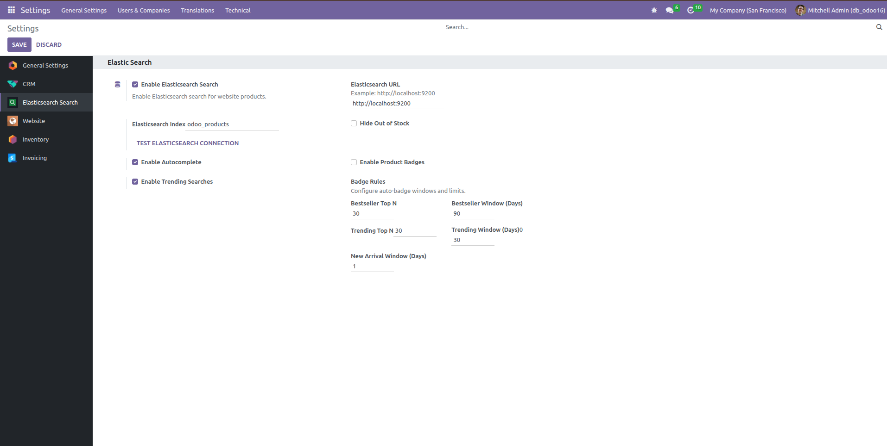
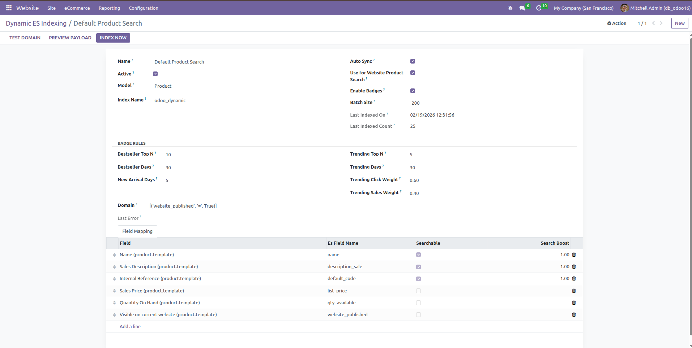

Website Product Search (Elasticsearch)
Odoo Smart Search using Elasticsearch delivers lightning-fast product discovery, real-time suggestions, and a cleaner buying experience on your website.
Odoo 16
Screenshots

Custom search dropdown with product image, name, category, price, trending products and trending searches.

Dedicated settings panel for Elasticsearch URL, index, autocomplete, trending and stock behavior.

Auto-classified badges with distinct colors on products: Bestseller, Trending, and New Arrival.

Dynamic ES indexing configuration with model selection, field mapping, search boost, and domain-based indexing.
Key Features
- Lightning-fast search results on Odoo eCommerce, even with large product catalogs.
- Custom smart dropdown for website shop search (replaces base dropdown).
- Product suggestions with image, title, category, and formatted price.
- Auto-complete and type-ahead suggestions while customer types.
- Trending products ranked using actual sales data.
- Trending searches based on real click analytics (noise filtered).
- Advanced filtering by category, brand, attributes, and price range.
- Elasticsearch facet aggregations for category/brand/attribute/price buckets.
- Option to hide out-of-stock products from results.
- Index sync on create/update/delete and scheduled cron reindex.
- Dynamic indexing config for model/field mapping with field-level search boosts.
- Click-through analytics + click-aware reranking for better relevance over time.
- Safe fallback to Odoo ORM search if Elasticsearch is unavailable.
Why Elasticsearch
- Elasticsearch uses inverted indexing for fast full-text lookup.
- Search is optimized for relevance and speed, unlike simple DB pattern scans.
- It scales better for real-time website search and suggestion experiences.
Index Management
- Configure Elasticsearch URL and index directly from Odoo Settings.
- Manage dynamic indexing from Website → Configuration → Dynamic ES Indexing.
- Choose model, domain, mapped fields, searchable flags, and search boosts.
- Track indexing status/history for debugging.
- Use scheduled cron to keep new/updated products in sync automatically.
Configuration
- Go to Settings → Elasticsearch Search.
- Enable Elasticsearch Search.
- Set Elasticsearch URL (for example
http://localhost:9200). - Set index name (default
odoo_dynamic). - Use Test Elasticsearch Connection button to verify connectivity.
- Enable/disable autocomplete and trending searches.
- Optionally hide out-of-stock products.
- Use Dynamic ES Indexing to control field mapping and search boost.
- Run reindex cron or wait for automatic indexing.
- Use website search bar as usual on Shop page.